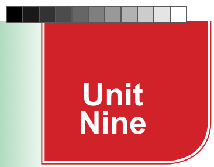
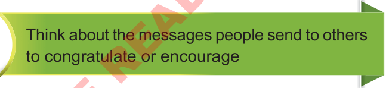
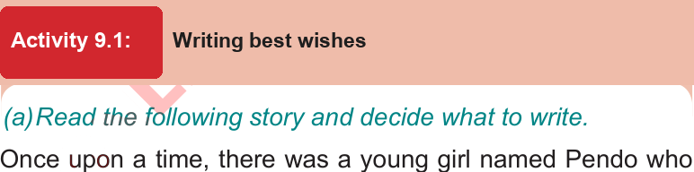

Writing wishes and short messages
Best wishes are friendly messages we send to different people such as relatives, friends, and parents for various purposes including congratulating, encouraging, and appreciating them. In this unit, you will learn to send congratulatory and appreciation messages and wish people happy anniversaries for various events. The competencies developed will enable you to wish others well in different life events.


Once upon a time, there was a young girl named Pendo who loved making her friends and family feel special. She has always wanted to learn how to write best wishes for different occasions. One day, her teacher, Mr Mussa, decided to teach the class about writing heartfelt wishes.
Mr Mussa began, “Wishes are special words that make people feel happy, loved, and cared for. Today, we will learn how to write three types of wishes: Birthday Wishes, Best Wishes for Exams, and Get Well Soon Wishes.”